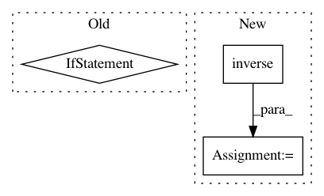

d496aaefc795e176b615815e9f30f335860f013b,geomstats/lie_group.py,LieGroup,group_log,#LieGroup#Any#Any#,59
Before Change
Compute the group logarithm at point base_point
of the point point.
if base_point is None:
return self.group_log(point, self.identity)
else:
raise NotImplementedError(
"The group logarithm is not implemented.")
def add_metric(self, metric):
self.metrics.append(metric)
After Change
else:
jacobian = self.jacobian_translation(point=base_point,
left_or_right="left")
point_near_id = self.compose(self.inverse(base_point), point)
group_log_from_id = self.group_log_from_identity(
point=point_near_id)
group_log = np.dot(jacobian, group_log_from_id)
return group_log
def group_exponential_barycenter(self, points, weights=None):
In pattern: SUPERPATTERN
Frequency: 3
Non-data size: 3
Instances
Project Name: geomstats/geomstats
Commit Name: d496aaefc795e176b615815e9f30f335860f013b
Time: 2018-01-22
Author: ninamio78@gmail.com
File Name: geomstats/lie_group.py
Class Name: LieGroup
Method Name: group_log
Project Name: Qiskit/qiskit-aqua
Commit Name: 7ed25c1db031d602e669c04c60ff431016214742
Time: 2019-04-03
Author: shaohan.hu@ibm.com
File Name: qiskit/aqua/components/feature_maps/pauli_expansion.py
Class Name: PauliExpansion
Method Name: construct_circuit
Project Name: geomstats/geomstats
Commit Name: c1f116ffdced6cf3705b37868e55c4e2b258650b
Time: 2020-04-06
Author: nicolas.guigui@inria.fr
File Name: geomstats/geometry/special_orthogonal.py
Class Name: SpecialOrthogonal
Method Name: regularize_tangent_vec